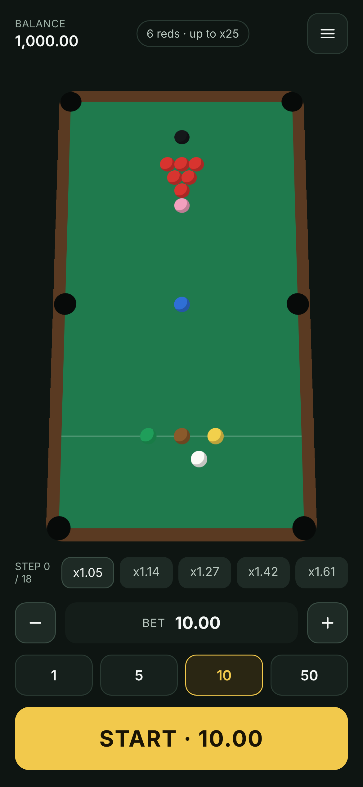
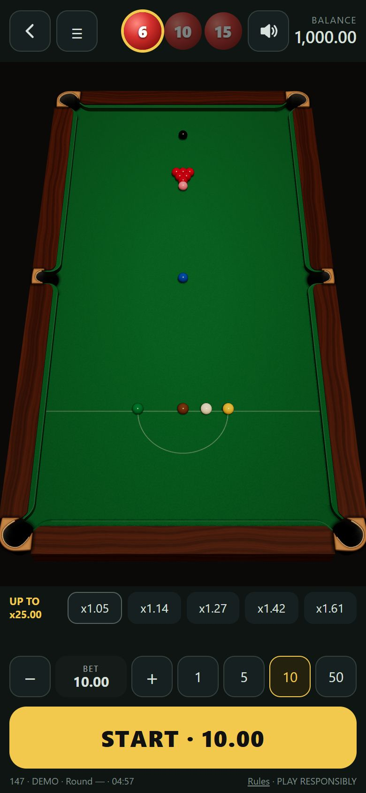
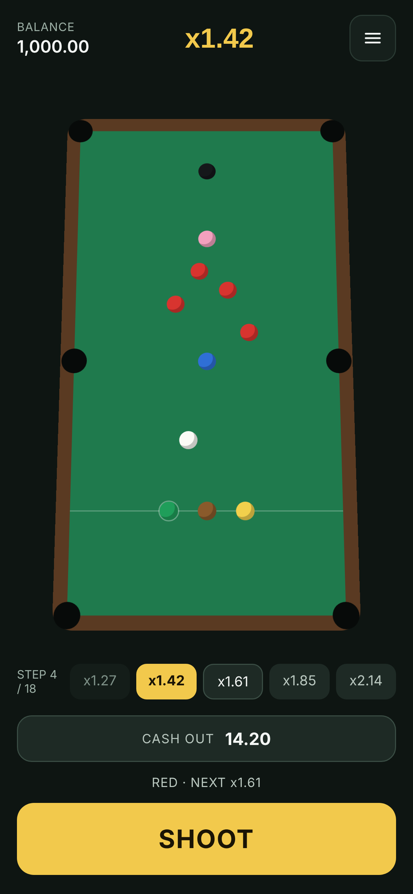
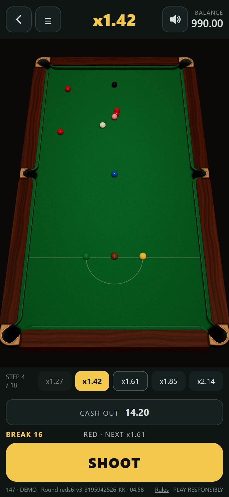
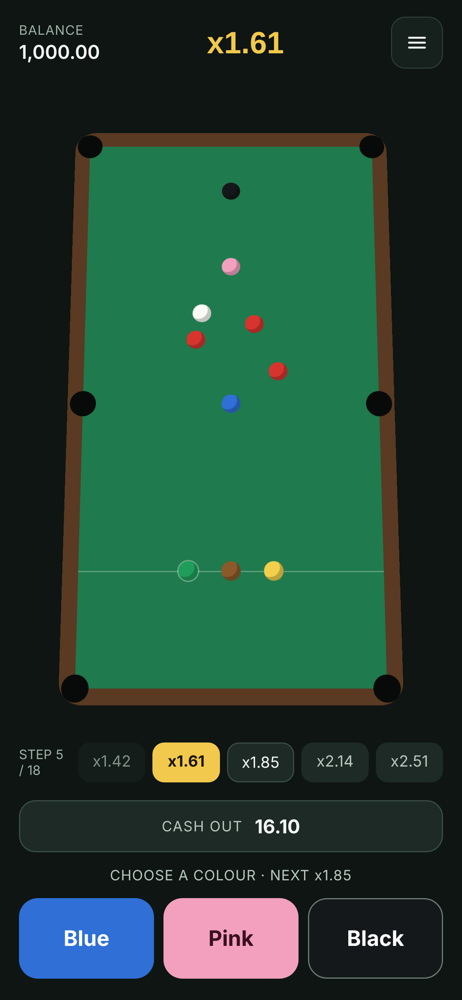
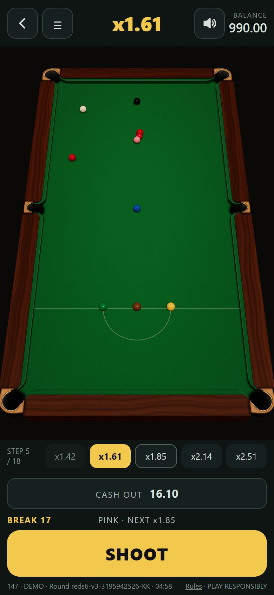

Game vs mockups (PLAN 10.2)
Left: the approved mockup (mockups/A.png, C.png, D.png). Right: the game today (dev server, 390x844, the same state; developer-only marks hidden). Report only: nothing was changed. deliberate = an owner decision since the mockups; check = may be unintended, your call.
D: between rounds


| What | Mockup | Game | |
|---|---|---|---|
| Layout | table smaller, flat, dark gap above and below | full-screen layout, the table fills the width | deliberate |
| Table look | flat 2D, light green, plain brown rails, round black pockets | 3D view at 57°, wood rails, pocket leathers, D and baulk line drawn | deliberate |
| Top centre | pill "6 reds · up to x25" | three level balls 6 / 10 / 15 | deliberate |
| Top bar | BALANCE left, menu right | back + menu left; sound + BALANCE right | deliberate |
| Cue ball | inside the D, below the baulk line | ON the baulk line, between brown and yellow | deliberate (night 6) |
| Ladder label | "STEP 0 / 18" | "UP TO x25.00" in gold | check |
| Bet area | − / BET / + on one row, then 4 wide quick bets (1, 5, 10, 50) on a second row | − / BET / + and the 4 quick bets on ONE row; buttons smaller | check |
| Space | even gaps | an empty gap of about 40 px between the ladder strip and the bet row | check |
| Footer | none | "147 · DEMO · Round — · 04:57" and "Rules · PLAY RESPONSIBLY" | deliberate |
| START button | "START · 10.00" | same text; heavier font | check (font only) |
A: a red to play (step 4)


| What | Mockup | Game | |
|---|---|---|---|
| Layout, table look, top bar | as in D | as in D | deliberate |
| Top centre | x1.42 | x1.42 | same |
| Ladder strip | STEP 4 / 18, x1.27 · x1.42 · x1.61 (outlined) · x1.85 · x2.14 | the same | same |
| CASH OUT | CASH OUT 14.20 | the same | same |
| Hint line | "RED · NEXT x1.61" centred | "BREAK 16" on the left + "RED · NEXT x1.61" | deliberate (BREAK n) |
| SHOOT | SHOOT | SHOOT, heavier font | check (font only) |
| Footer | none | DEMO line with the round code | deliberate |
C: a colour to play (step 5)


| What | Mockup | Game | |
|---|---|---|---|
| Colour choice | "CHOOSE A COLOUR · NEXT x1.85" and three buttons Blue / Pink / Black | "PINK · NEXT x1.85" and one SHOOT button: the game picks the colour | deliberate (RULES B.3: automatic pick until the colour-choice stage) |
| Ladder strip, CASH OUT 16.10, x1.61 | as shown | the same | same |
| Hint line | centred | "BREAK 17" on the left | deliberate |
| Layout, table, top bar, footer | as in D | as in D | deliberate |
Colours and sizes (all three)
- Gold (multiplier, current chip, SHOOT / START) and the dark background match the mockups.
- Measured on the pictures (CSS px at 390 wide): top bar about 62 px in both; the table (with rails) about 500 px high in the game against about 485 px in the mockup, but the game's table is wider at the bottom (3D view) and fills the width.
- The mockup's table starts lower (gap of about 50 px under the top bar); the game's starts about 40 px under it.